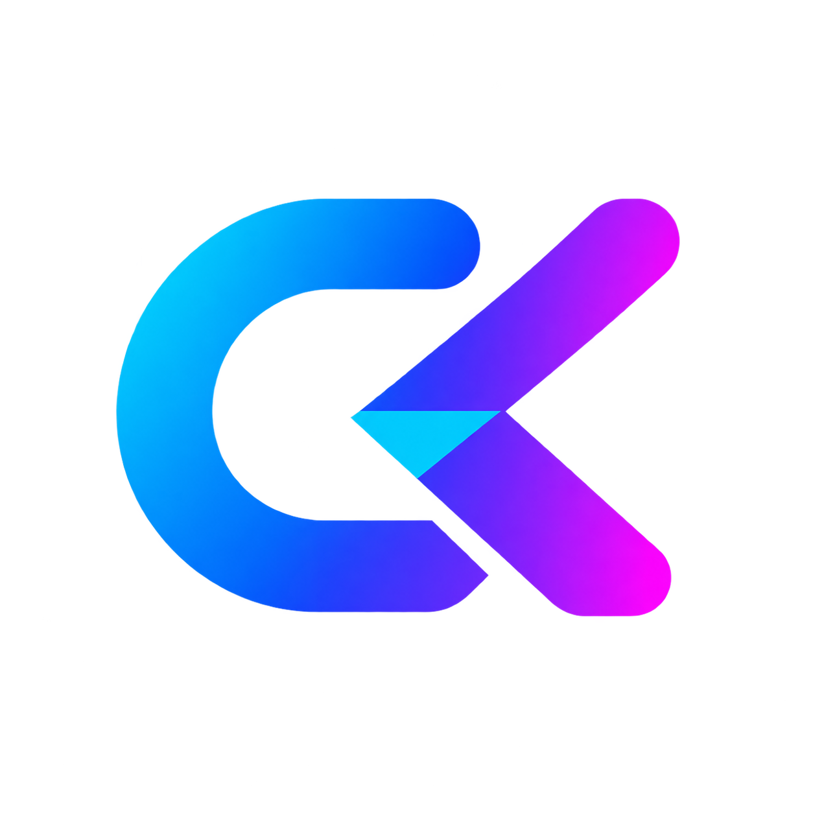

app/
Controller, model, middleware, view, route, dan konfigurasi aplikasi.

Codekop PHP MVCCodekop PHP MVC adalah framework PHP-native untuk aplikasi web dan API. Routing, controller, model, view, session, CSRF, CSP, dan PDO tersedia tanpa framework besar.
Persyaratan minimum adalah PHP 8.2+, Composer, dan database opsional.
composer install
php -S 127.0.0.1:8080
Buka / untuk halaman utama atau
/api/health untuk memeriksa endpoint API.
env menjadi
production pada app/Config/Config.php.
Document root harus menunjuk langsung ke root project. Semua request
yang bukan file atau folder fisik diarahkan ke index.php.
Sesuaikan path project, domain, dan socket PHP-FPM dengan server Anda.
Aktifkan module rewrite dan headers:
sudo a2enmod rewrite headers
sudo systemctl restart apache2
Buat virtual host, misalnya
/etc/apache2/sites-available/codekop.conf:
<VirtualHost *:80>
ServerName codekop.test
DocumentRoot /var/www/php-mvc-codekop
<Directory /var/www/php-mvc-codekop>
AllowOverride All
Options -Indexes
Require all granted
</Directory>
ErrorLog ${APACHE_LOG_DIR}/codekop-error.log
CustomLog ${APACHE_LOG_DIR}/codekop-access.log combined
</VirtualHost>Aktifkan site lalu reload Apache:
sudo a2ensite codekop.conf
sudo apache2ctl configtest
sudo systemctl reload apache2
File .htaccess project sudah memblokir akses langsung
ke app/, system/, storage/, dan
vendor/. Pastikan AllowOverride All aktif
agar aturan tersebut dibaca Apache.
Buat server block, misalnya
/etc/nginx/sites-available/codekop. Ganti socket
PHP-FPM bila versi PHP berbeda.
server {
listen 80;
server_name codekop.test;
root /var/www/php-mvc-codekop;
index index.php;
charset utf-8;
client_max_body_size 10m;
location / {
try_files $uri $uri/ /index.php?url=$uri&$query_string;
}
location ~ ^/(app|system|storage|vendor)/ {
deny all;
return 404;
}
location ~ \.php$ {
try_files $uri =404;
include fastcgi_params;
fastcgi_param SCRIPT_FILENAME $document_root$fastcgi_script_name;
fastcgi_param HTTP_PROXY "";
fastcgi_pass unix:/run/php/php8.4-fpm.sock;
}
location ~ /\. {
deny all;
return 404;
}
}Aktifkan konfigurasi lalu uji dan reload Nginx:
sudo ln -s /etc/nginx/sites-available/codekop /etc/nginx/sites-enabled/codekop
sudo nginx -t
sudo systemctl reload nginxsudo chown -R www-data:www-data /var/www/php-mvc-codekop/storage
sudo find /var/www/php-mvc-codekop/storage -type d -exec chmod 750 {} \;
sudo find /var/www/php-mvc-codekop/storage -type f -exec chmod 640 {} \;storage/ yang perlu dapat ditulis oleh user web server.
Jangan menjalankan development mode pada server publik.
Controller, model, middleware, view, route, dan konfigurasi aplikasi.
Kernel MVC, router, request, response, session, security, dan database.
Asset UI lokal dan plugin development tanpa CDN.
Runtime session dan data internal yang tidak boleh dipublikasi.
Route ditulis di app/Config/Routes.php.
use System\Route;
Route::get('/users/{id}', 'Users@show')->name('users.show');
Route::post('/users', 'Users@store');
Route::apiGet('/api/health', 'Api@health');Route::group(['middleware' => ['csrf']], static function (): void {
Route::post('/users', 'Users@store');
});
Route::resource('/users', 'Users');
Method route yang tersedia: get, head,
post, put, patch,
delete, dan options.
Controller dapat berupa class global lama atau class namespace PSR-4.
<?php
namespace App\Controllers;
use System\Controller;
final class Users extends Controller
{
public function show(string $id): array
{
return ['id' => $id];
}
}Model dapat dipanggil dari controller menggunakan loader bawaan:
$users = $this->model('Users');
// atau App\Models\Admin\Users
$users = $this->model('Admin\\Users');| API | Fungsi |
|---|---|
$this->request->route('id') | Mengambil parameter route. |
$this->request->query('q') | Mengambil query string. |
$this->request->json() | Membaca body JSON sebagai array. |
Response::json($data) | Menghasilkan response JSON. |
Response::redirect('/') | Menghasilkan redirect tervalidasi. |
Sebelum meminta AI menulis CRUD, minta AI membaca aturan project dan pola kode yang sudah ada. Ini mencegah route, security, dan gaya kode baru bertabrakan dengan boilerplate.
| Urutan | File | Tujuan |
|---|---|---|
| 1 | AGENTS.md | Aturan perubahan, security, verifikasi, dan batasan kerja agent. |
| 2 | README.md | Arsitektur, alur request, konfigurasi, dan cara menjalankan project. |
| 3 | composer.json | Versi PHP, autoload PSR-4, dan dependency yang boleh digunakan. |
| 4 | app/Config/Routes.php | Gaya route, HTTP method, parameter, dan middleware. |
| 5 | Controller, model, dan view terkait | Meniru pola lokal sebelum membuat file baru. |
| 6 | Schema atau migration database | Memastikan nama tabel, kolom, index, dan relasi benar. |
| 7 | system/Core/* | Hanya dibaca jika fitur memang menyentuh kernel framework. |
AI membaca aturan dan file terkait, lalu menyebutkan gap tanpa mengubah file.
Tentukan route, field CRUD, validasi, permission, response, dan acceptance criteria.
Tambahkan route, controller, model, view, dan migration hanya pada scope fitur.
Jalankan lint, test, smoke test, lalu periksa diff dan security regression.
Baca AGENTS.md, README.md, composer.json, app/Config/Routes.php,
dan file controller/model/view yang paling mirip. Jangan mengubah file dulu.
Buat CRUD untuk resource "products" dengan field:
- name: wajib, string maksimal 150 karakter
- price: wajib, angka >= 0
- active: boolean
Kebutuhan:
- route GET index/create/edit/show dan POST/PUT/DELETE sesuai pola project
- prepared statements dan validasi server-side
- escaping semua output view
- CSRF untuk request yang mengubah data
- RBAC permission: products.view, products.create, products.update, products.delete
- jangan menambahkan login atau dependency baru
Sebelum selesai: tampilkan file yang akan diubah, implementasikan perubahan,
jalankan lint/test yang relevan, lalu laporkan hasil dan risiko yang tersisa.git diff sudah diperiksa.AGENTS.md tersedia di
OpenAI Docs.
Workflow ini juga dapat dipakai di Claude Code dengan aturan project
yang sama.
Front controller memasang security headers dan CSP secara default.
Script inline memakai nonce dan koneksi dibatasi ke origin sendiri.
Gunakan csrf_field() atau header X-CSRF-TOKEN.
Gunakan prepared statement dan identifier tervalidasi melalui CRUD.
Session memakai strict mode, cookie HttpOnly, dan SameSite.
Route::group(['middleware' => ['csrf']], static function (): void {
Route::post('/profile', 'Profile@update');
});Boilerplate ini tidak memaksa login atau RBAC. Jika aplikasi membutuhkan otorisasi, gunakan RBAC di application layer dan hubungkan ke provider user/session milik aplikasi.
| Tabel | Kolom utama | Fungsi |
|---|---|---|
roles | id, name, slug | Daftar role, misalnya admin, editor, viewer. |
permissions | id, name, slug | Hak terkecil, misalnya products.update. |
role_permissions | role_id, permission_id | Relasi banyak-ke-banyak role dan permission. |
user_roles | user_id, role_id | Role yang dimiliki user. |
<resource>.<action>
products.view
products.create
products.update
products.delete
reports.export
Mulai dari permission spesifik. Hindari permission global seperti
is_admin untuk semua operasi karena sulit diaudit dan
terlalu luas.
public function update(string $id): Response
{
if (!$this->authorization->can('products.update')) {
return Response::json([
'error' => ['code' => 'forbidden'],
], 403);
}
// validasi input, query prepared statement, lalu simpan perubahan
}Permission yang belum diberikan harus ditolak.
Permission wajib dicek ulang pada setiap action sensitif.
Berikan hanya hak yang diperlukan oleh role.
Catat perubahan role, permission, dan action berisiko.
Baca AGENTS.md dan dokumentasi project terlebih dahulu.
Rancang RBAC untuk resource products dengan role admin, editor, viewer.
Kriteria:
- deny by default
- permission granular: view/create/update/delete
- cek permission di server-side controller/service
- jangan menganggap hidden button sebagai security
- gunakan prepared statements dan audit perubahan permission
- jangan membuat login baru; gunakan user/session provider aplikasi
- tambahkan test untuk allow, deny, dan user tanpa role
Tampilkan schema, file yang diubah, threat model singkat, dan hasil verifikasi.Konfigurasi utama ada di app/Config/Config.php.
$appConfig = [
'env' => 'development',
'timezone' => 'Asia/Jakarta',
'session' => [
'name' => 'codekop_session',
'path' => ROOTPATH . 'storage/sessions',
],
];composer validate --no-check-publish
find . -path './vendor' -prune -o -name '*.php' -print0 | xargs -0 -n1 php -lPastikan lint, route smoke test, dan konfigurasi production berhasil sebelum deploy.